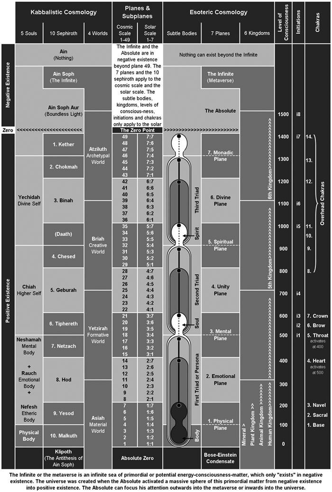

The three triads can be
compared to a ladder
which the monad climbs
on the first stage of
its evolutionary journey
from plane 1–7. This
ladder is mentioned in
the Bible in Genesis
28:12:
"[Jacob]
had a dream in which he
saw a ladder resting on
the earth, with its top
reaching to heaven, and
the angels of God were
ascending and descending
on it".
The First Self or
Persona
The mineral, plant,
animal and human
kingdoms all operate
through the first triad.
Our etheric bodies were
first acquired when our
monads passed through
the mineral kingdom, and
were built up in the
plant kingdom. Our
emotional bodies were
first acquired when we
passed through the plant
kingdom, and were built
up in the animal
kingdom. Our mental
bodies (minds) were
first acquired when we
passed through the
animal kingdom, and are
being built up now in
the human kingdom. In
the human kingdom we
also have to refine
these three subtle
bodies and build up our
next body, the causal
body, so that we can
bridge the gap between
the first and second
triads.
When a monad becomes a
self-conscious
individual (between the
animal and human
kingdoms) it can be
described as a
"self".
The first triad or
persona is the
"self"
we all identify with.
The persona includes our
mind (mental body),
emotions (emotional
body) and feelings (etheric
body), all of which
operate through our
physical body. The
physical body and three
subtle bodies are all
enclosed in the lesser
causal body. The greater
causal body is actually
part of the second
triad, but the part that
descends can be
considered part of the
persona. The five bodies
that comprise a human
being are:
-
Physical body (or
flesh body)
1:1–1:3
-
Etheric body (or
energy
body)
1:4–1:6
-
Emotional body (or
astral
body)
2:1–2:6
-
Mental body (or
intellectual
mind)
3:1–3:4
-
Lesser Causal body
(or conceptual
mind)
3:5–3:6
Because each one is more
subtle than the
previous, the bodies
easily inter-penetrate
each other. The etheric
body is the energy
template around which
the physical body is
formed. Consequently, it
is exactly the same size
and shape as the
physical body, but with
an aura that projects
slightly beyond the
skin. The emotional body
also has a counterpart
that corresponds with
the physical body.
Around 99% of the matter
in the emotional body is
contained
"within"
the emotional
counterpart to physical
body, and the remainder
forms an ovoid aura
which projects about 2
feet (60cm) from the
body. The same is true
of both the mental and
lesser causal bodies,
with 99% of the matter
"within"
the physical body and
the remaining 1% forming
an aura. The size of the
human aura is determined
by the size of the
lesser causal body. It
is an ovoid shape which
typically extends 2–3
feet (60–90cm) from the
body and acts as a kind
of protective shell.
There are some very good
illustrations of man’s
subtle bodies in Barbara
Brennan's
book Hands of Light,
although she has devised
her own names for them
(see Figure 6e).
Consciousness cannot
function directly
through the physical
body, which is little
more than a garment that
enables us to function
in a physical
environment. The
physical body must be
controlled via the
etheric body; without it
the physical body is
unconscious and
immobile. The physical
and etheric bodies are
therefore two halves of
a whole, known as the
physical-etheric body,
which are only
completely separated at
physical death.
As we evolve our level
of consciousness rises
higher and higher
through our subtle
bodies, until eventually
our first and second
triads unite – this
process is described
fully in Chapter 8.

Figure
6e – Man’s Subtle Bodies
The Second Self or Soul
Triad
The second triad is
composed of the mental
atom (3:7), the unity
atom (4:7) and the
spiritual molecule
(5:4). As evolution
proceeds the monad
builds bodies around
these successively
higher centres of
consciousness, and as
soon as it has a body it
can seriously begin to
develop consciousness on
that plane. Prior to
this, only subjective
consciousness can be
developed. A second self
consists of four
different bodies/beings.
The highest, the upper
spiritual body
(5:5–5:7), encloses the
lower three just as our
causal body encloses our
persona. The lower three
bodies of a second self
are the causal body
(3:5–3:7), the unity
body (4:1–4:7) and the
lower spiritual body
(5:1–5:4).
The combined
consciousness of these
subtle bodies is
sometimes called the
higher self, but the
higher self of the
average human is not
fully developed and
generally only includes
the causal body. Even
our causal body is not
our own, but is on loan
from our guardian angel.
The guardian angel can
therefore be considered
our caretaker higher
self until we enter the
fifth kingdom and
actually become our
higher self.
In the first triad the
matter aspect is the
most dominant –
everything is focussed
around life on the
physical plane. In the
second triad the
consciousness aspect is
the most dominant, but
the consciousness of our
second triad can only be
subjectively perceived
until a direct link has
been built between the
two triads. This is
completed at
enlightenment (the 3rd
initiation), but it is
not until the 4th
initiation that we enter
the fifth kingdom. At
that moment the primary
guardian angel is
released, the borrowed
causal body destroyed
and the monad instantly
creates its own. The
individual self-identity
developed in the human
kingdom is retained in
the fifth kingdom, but
consciousness also
expands to become part
of a collective.
The fifth kingdom is a
group of
"superhuman"
beings that have already
passed through the human
kingdom. They no longer
need to incarnate into
physical human bodies
but a few occasionally
do so in order to teach
humanity. When they do
incarnate into human
bodies they are
invulnerable to any kind
of disease. The fifth
kingdom is known as the
"Kingdom
of God"
because its members are
omniscient on planes 1-4
and are the nearest
thing to God that humans
will ever know. Some of
its members guide the
evolution of humanity
and implement the divine
plan on Earth – they are
known as the
"planetary
hierarchy".
In years gone by, larger
numbers of the planetary
hierarchy regularly
incarnated to guide and
teach humanity (they
gave us esoterics). To
the ancient humans they
would have seemed liked
gods, even though they
are not. Around 12,000
years ago, humans
mistakenly thought they
could manage their own
affairs and the
planetary hierarchy were
banished – we have been
fighting amongst
ourselves ever since. At
the present time the
planetary hierarchy
conducts its business
behind the scenes, on
the etheric plane. They
periodically release
esoteric information to
advanced disciples who
will publish the
information openly;
there are no official
"channels",
no secrets, no cults and
no sects.
The Third Self or Spirit
Triad
Theosophists mistakenly
call the third triad the
monad. This mistake
should be obvious
because a monad can have
only one part and a
triad must have three. A
further consequence of
this error is that they
incorrectly call the
sixth plane the monadic
plane.
The third triad is
composed of the
spiritual atom (5:7),
the divine atom (6:7)
and the monadic molecule
(7:4). A third self
consists of four
different bodies/beings.
The highest, the upper
monadic body (7:5-7),
encloses the lower three
just as our causal body
encloses our persona.
The lower three bodies
of a third self are the
upper spiritual body
(5:5-7), the divine body
(6:1-7) and the lower
monadic body (7:1-4).
The combined
consciousness of these
subtle bodies is
sometimes called the
“divine self”, but the
divine self of a human
being is completely
undeveloped.
In the first triad the
matter aspect is
dominant, in the second
triad the consciousness
aspect is dominant and
in the third triad the
energy aspect is
dominant. Third selves
have already mastered
matter and consciousness
and they now need to
master energy. Since
"Will
= Consciousness + Energy",
the energy aspect is
often called
"will
power".
They hold the senior
posts of the planetary
hierarchy and they use
their will power to
guide the evolution of
the lower kingdoms. They
know the future because
they help to create it –
everything that occurs
on the physical plane
has its origin in the
subtle planes. Events
are conceived and set up
on the subtle planes
long before they
manifest on the physical
plane. Destiny will be
discussed more fully in
Chapter 16.
Third selves share the
collective consciousness
of the solar system
whilst retaining their
individual sense of
identity and character.
Once a monad achieves
active consciousness on
a specific plane, it
shares the collective
consciousness of all the
lower planes and can
therefore be said to be
omniscient on those
lower planes. A third
self’s mastery over the
energy aspect means he
can also be said to be
omnipotent on the lower
planes.
Beyond the Third Triad
A monad (49-atom) is
involved in a 7-atom for
its entire journey
through the solar
system, but the journey
does not stop there.
Once a monad has fully
awakened its
consciousness in that
7-atom it can dispense
with its three triads
and continue its
evolution beyond the
solar system. The
monad’s 7-atom contains
all the forty two higher
kinds of atoms,
therefore a chain of
atoms can be said to
connect the monad with
all the forty two higher
planes of existence.
This chain of atoms is
the "ladder"
which the monad will
climb on the cosmic
stage of its
evolutionary journey.
The monad passes through
six cosmic kingdoms,
which correspond to the
upper six cosmic planes
(8-14, 15-21, 22-28,
29-35, 36-42 and 43-49).
When the monad has
evolved all the way up
to plane 49 it has come
full circle and is once
again a fully liberated
49-atom. It began its
journey as an
unconscious atom of
primary matter and has
evolved into a
fully-realised
quaternary monad whose
field of consciousness
embraces an entire
galaxy. The final
challenge that faces the
monad is to leave the
universe it
"grew
up"
in and go off into the
Infinite to create its
own universe.
Father, Son and Mother
(Holy Spirit)
Many Christians believe
that the only way to get
to heaven is to believe
that Jesus Christ is the
Son of God and our
saviour (whatever that
means). This false
belief stems from a
misunderstanding of the
old Gnostic terminology,
which was always
symbolic:
-
The
Gnostics used the
term
"Father"
to denote the third
self or spirit
triad. So when
Christ said “the
father and I are
one” (John 10:30),
he meant he was
united with his
Spirit, or more
accurately that his
monad was centred in
his third triad.
-
The Gnostics used
the term
"Son"
to denote the second
self or soul triad.
So when Christ said
"no
one knows the Father
except the Son"
(Matthew 11:27), he
meant that we need
to become second
selves before we can
even begin to
comprehend what a
third self is.
-
The
phrase:
"No
one comes to the
Father except
through me"
(John 14:6)
originally read
"no
one comes to the
Father except
through the Son".
Since humans are
centred in our first
selves, we must
therefore pass
through the Son
(second self or soul
triad) to get to the
Father (third self
or spirit triad).
-
The
Gnostics used the
term
"Mother"
to denote the first
self or Persona; the
lowest aspect of our
being that
incarnates into the
physical body. The
word
"mother"
originates from the
Latin
"mater",
and it is no
coincidence that the
word
"matter"
shares the same
root. The Mother
(persona) gives
birth to the Son
(soul), and the son
goes on to become
the Father (spirit).
Or as the bible puts
it:
"It
is sown a soul body;
it is raised a
spiritual body"
(1 Corinthians
15:44). The term
"Mother"
later became
confused with the
"Holy
Spirit".
-
"Holy
Spirit"
actually refers to
our own personal
guardian angel who
stands in for our
soul and guides our
development until
our soul is fully
activated. We each
have our own
guardian angel so
there literally
billions of them but
they are united
because they share a
collective
consciousness. Our
guardian angel can
be considered our
personal Holy Spirit
or our personal
"god"
because it guides
us, inspires us,
protects us, knows
our every thought
and hears our
prayers. The Holy
Spirit is very
active amongst the
born-again
Christians. They
"speak
in tongues"
when their guardian
angel communicates
with them on a
super-conscious
level and they are
healed when their
guardian angels send
down higher
energies. This often
causes them to faint
because their brains
are not used to the
higher energies.
Body, Soul and Spirit
Many religions consider
man to be a collection
of spiritual principles,
rather than a single
"soul"
or "spirit".
The names of the various
aspects of being are
listed below in Figure
6f:


Figure 6g – An
Overview of Everything
Discussed So Far |